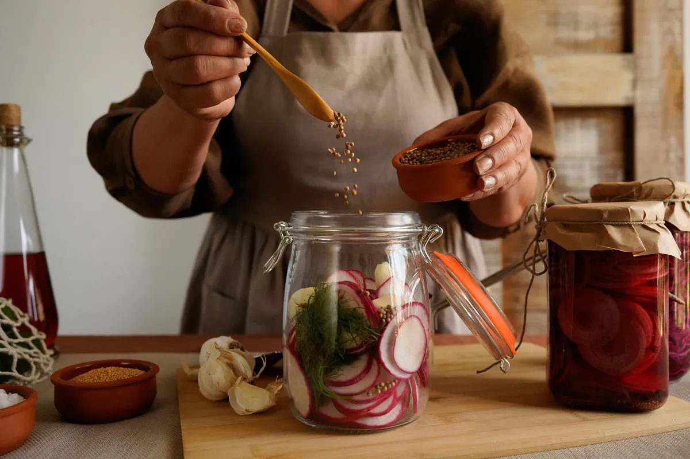

Sustento Material
Forja abundancia: antes, durante y después de la tormenta
Convertimos cualquier rincón –patio urbano o parcela remota– en un núcleo de provisión constante. Ingenio campesino y ciencia práctica se unen para que tu mesa siga llena aun cuando las luces se apaguen.
Explora los Temas de Sustento Material
📦 ALMACENA: Alimento y MedicinaAlgunos artículos de Sustento Material
 Almacenar sal: por qué toda familia necesita una reserva a largo plazo
Almacenar sal: por qué toda familia necesita una reserva a largo plazo
 Bicarbonato: Recurso doméstico permanente
Bicarbonato: Recurso doméstico permanente
 Filtros de agua: cómo asegurar agua potable en cualquier lugar
Filtros de agua: cómo asegurar agua potable en cualquier lugar
 Mochila de 72 horas: lo que tu familia realmente necesita
Mochila de 72 horas: lo que tu familia realmente necesita
 Cómo almacenar granos para larga duración sin que se dañen
Cómo almacenar granos para larga duración sin que se dañen
 La despensa en polvo: 4 alimentos nutritivos que ahorran espacio
La despensa en polvo: 4 alimentos nutritivos que ahorran espacio
 Cómo enlatar carne de forma segura para almacenarla a largo plazo
Cómo enlatar carne de forma segura para almacenarla a largo plazo
 Pastillas de yodo: cuándo y cómo usarlas en emergencias
Pastillas de yodo: cuándo y cómo usarlas en emergencias
 Tres Antisépticos Multiuso
Tres Antisépticos Multiuso
 Estacas de riego: hidratación simple para un crecimiento constante
Estacas de riego: hidratación simple para un crecimiento constante
 Germinados: cultiva alimentos frescos en cualquier lugar todo el año
Germinados: cultiva alimentos frescos en cualquier lugar todo el año
 Almacén frío: conserva alimentos sin necesidad de electricidad
Almacén frío: conserva alimentos sin necesidad de electricidad
 Bebidas de hidratación: cómo mantenerte hidratado en emergencias
Bebidas de hidratación: cómo mantenerte hidratado en emergencias
 Estufa cohete familiar: cocina eficiente sin depender de electricidad
Estufa cohete familiar: cocina eficiente sin depender de electricidad
 Horno holandés: cocina confiable en cualquier situación
Horno holandés: cocina confiable en cualquier situación
 Molienda de granos: convierte reservas en harina utilizable
Molienda de granos: convierte reservas en harina utilizable
 Tinturas herbales: conserva remedios naturales a largo plazo
Tinturas herbales: conserva remedios naturales a largo plazo
 Sistema familiar de almacenamiento y purificación de agua (1).
Sistema familiar de almacenamiento y purificación de agua (1).
 Sistema de almacenamiento y purificación de agua (2)
Sistema de almacenamiento y purificación de agua (2)
Primeros pasos hoy mismo
1
Calcula cuántas raciones familiares necesitas para 90 días.
2
Audita tus herramientas: marca las dependientes de electricidad.
3
Elige un micro-proyecto piloto (germinando lentejas en 72 h) y comparte tu avance con la comunidad.
Compártelo con la comunidad: editor@prepperfamily.org
Esta sección forma parte de la misión de PrepperFamily.org.